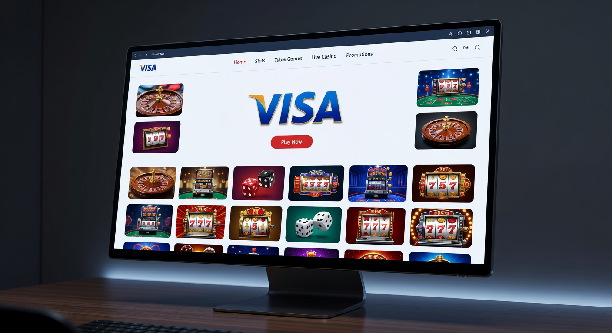
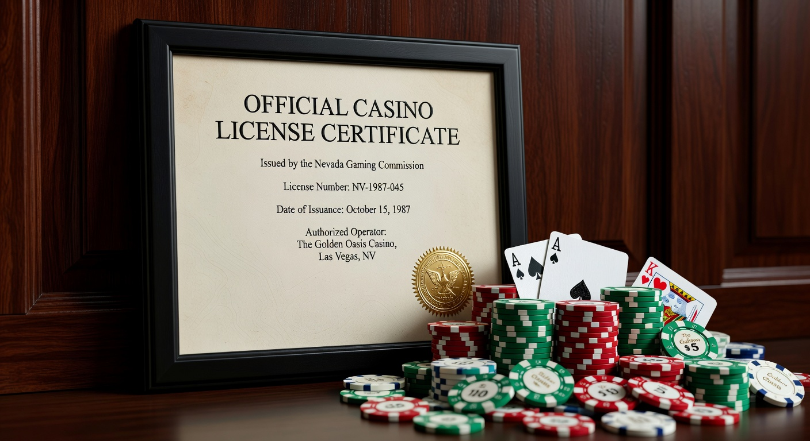
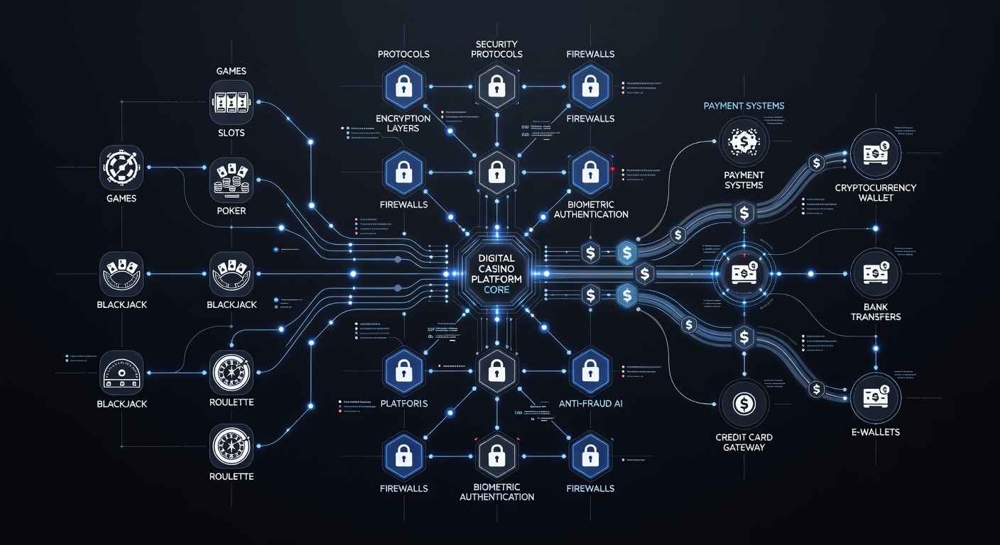

Guida Completa al Miglior Casino con Visa del 2026
Il panorama del gioco d'azzardo digitale in Italia ha raggiunto vette di eccellenza tecnologica senza precedenti nel 2026. La sicurezza delle transazioni e la rapidità dei trasferimenti sono diventate le priorità assolute per ogni appassionato. Scegliere un casino con visa oggi significa affidarsi a uno dei circuiti finanziari più solidi e monitorati al mondo, garantendo che ogni deposito sia protetto da protocolli di crittografia di ultima generazione.
In questa guida analizziamo come i metodi di pagamento si siano evoluti per offrire un'esperienza fluida e immediata. Le piattaforme che accettano questa carta offrono standard elevatissimi, integrando sistemi di verifica biometrica che rendono ogni operazione sicura e a prova di frode. Se cerchi i migliori casino visa, sei nel posto giusto per scoprire le recensioni più accurate del settore.
La diffusione capillare della carta visa nel mercato italiano ha spinto gli operatori a ottimizzare costantemente i propri portali. I giocatori cercano affidabilità, e i casino online che accettano visa rispondono perfettamente a questa esigenza, combinando ampi palinsesti di gioco con una gestione finanziaria trasparente. Esploreremo insieme le opzioni più vantaggiose disponibili nel 2026.
Per chi preferisce soluzioni alternative, è sempre utile consultare i siti casino curacao affidabili, che spesso offrono flessibilità e promozioni competitive. Tuttavia, la solidità del circuito Visa rimane un punto di riferimento insuperabile per la maggior parte degli utenti che desiderano un casino con visa di alto profilo.
Chi siamo
Siamo un team di esperti analisti del mercato IT applicato all'iGaming, attivo da oltre un decennio nella valutazione delle piattaforme di gioco digitali. Nel 2026, la nostra missione rimane quella di fornire recensioni imparziali e tecnicamente approfondite sui casino online visa, analizzando non solo i bonus, ma anche l'infrastruttura software sottostante.
La nostra esperienza ci permette di distinguere tra semplici operatori e veri leader del settore. Monitoriamo costantemente le licenze, i tassi di RTP (Return to Player) e la qualità del servizio clienti. Crediamo che la trasparenza sia fondamentale per navigare nel mondo dei casino italiani che accettano visa in totale sicurezza.
Come selezioniamo i migliori casino online

La nostra metodologia di valutazione per identificare un eccellente casino con visa è rigorosa e multifattoriale. Non ci limitiamo a guardare l'estetica del sito, ma entriamo nel dettaglio tecnico di ogni funzionalità. Ecco i pilastri del nostro processo di selezione:
- Sicurezza e Crittografia: Verifichiamo la presenza di certificati SSL a 256 bit e la conformità alle normative sulla privacy del 2026.
- Rapidità dei Prelievi: Un vero casino online pagamento visa deve garantire l'accredito delle vincite in tempi rapidissimi, idealmente sotto le 24 ore.
- Catalogo Giochi: Analizziamo la presenza di provider leader come Pragmatic Play, NetEnt e Evolution Gaming.
- Usabilità Mobile: Testiamo l'interfaccia su diversi dispositivi per assicurare una navigazione fluida.
- Supporto Clienti: Valutiamo la reattività e la competenza del servizio assistenza in lingua italiana.
Consideriamo inoltre l'integrazione di tecnologie moderne, come i sistemi di prelievo bitcoin casino, che spesso affiancano la classica carta di credito per offrire maggiore versatilità all'utente finale del 2026.
Licenza del casinò

La legalità è il primo requisito per qualsiasi casino con visa che voglia operare con successo nel 2026. In Italia, la licenza rilasciata dall'ADM (ex AAMS) è il sigillo di garanzia per eccellenza. Questa certificazione assicura che il sito operi sotto la stretta sorveglianza delle autorità statali, garantendo l'equità dei giochi e la protezione dei fondi.
Oltre alla licenza nazionale, molti operatori internazionali di prestigio sono regolamentati dalla Malta Gaming Authority. Queste giurisdizioni impongono standard severissimi contro il riciclaggio di denaro e a favore del gioco responsabile. Giocare in un casino deposito visa con licenza ufficiale significa avere la certezza che ogni transazione sia tracciata e sicura.
È importante ricordare che la normativa italiana del 2026 è tra le più avanzate in Europa. Scegliere visa nei casino online italiani con licenza regolare mette al riparo da qualsiasi rischio legale o finanziario. La trasparenza dei termini e delle condizioni è un elemento che non sottovalutiamo mai nelle nostre analisi professionali.
Bonus nel casino con visa
I bonus rappresentano il cuore dell'offerta promozionale nel 2026. Ogni casino con visa compete per attirare nuovi utenti offrendo pacchetti di benvenuto sempre più ricchi. Questi incentivi possono variare significativamente, dai bonus sul primo deposito ai giri gratuiti sulle slot più popolari del momento.
Le promozioni attuali sono progettate per premiare la fedeltà dei giocatori. Oltre al bonus iniziale, le piattaforme più moderne integrano meccaniche innovative come il Bonus Crab, che permette di ottenere premi extra attraverso minigiochi interattivi. La flessibilità della carta di credito Visa rende l'attivazione di questi bonus istantanea e senza intoppi burocratici.
50 Free Spin Senza Deposito
Una delle offerte più ricercate nel 2026 è senza dubbio quella dei 50 Free Spin Senza Deposito. Molti casino online che accettano visa permettono ai nuovi iscritti di testare i giochi più famosi, come Book of Dead o Starburst, senza dover versare un solo euro iniziale. Questa è una grande opportunità per valutare l'interfaccia software prima di procedere con un deposito reale.
Per chi cerca soluzioni ancora più rapide, esistono portali che offrono un casino senza documenti dove è possibile ricevere giri gratis dopo una verifica minima. Tuttavia, per riscattare le vincite derivanti da questi spin, l'utilizzo di una carta visa verificata rimane spesso il metodo più veloce e sicuro consigliato dagli esperti.
5€ Freebet Senza Deposito - Immediato
Per gli amanti delle scommesse integrate, il bonus 5€ Freebet Senza Deposito - Immediato è un classico intramontabile del 2026. Questo incentivo permette di piazzare una giocata gratuita su eventi sportivi o giochi live selezionati. È un ottimo modo per esplorare le potenzialità di un casino con visa senza rischi finanziari immediati.
Recensione dei Migliori Brand del 2026
Abbiamo selezionato e testato i sei brand più performanti che supportano il metodo di pagamento Visa quest'anno. Ognuno di questi operatori offre caratteristiche uniche e una sicurezza impeccabile per il pubblico italiano.
| Brand | Vantaggio Principale | Link Ufficiale |
|---|---|---|
| Millioner | Bonus benvenuto elevato | Visita Millioner |
| Roulettino | Ampia selezione di tavoli live | Visita Roulettino |
| Wyns | Interfaccia mobile fluida | Visita Wyns |
| Kinbet | Ottime quote scommesse | Visita Kinbet |
| Dragonia | Programma fedeltà VIP | Visita Dragonia |
| Divaspin | Slot esclusive 2026 | Visita Divaspin |
Ciascuno di questi siti rappresenta un'eccellenza come casino con visa. Ad esempio, Millioner si distingue per la rapidità dei pagamenti, mentre Dragonia offre un'esperienza immersiva grazie a grafiche in alta definizione e giochi di fornitori come Microgaming e Play'n GO.
Per chi invece preferisce iniziare con budget contenuti, suggeriamo di consultare la nostra guida sul casinò non aams deposito 10 euro, che presenta opzioni versatili e accessibili a tutti i profili di giocatori nel 2026.
Info tecniche sul casino con visa

Dal punto di vista tecnico, il casino con visa sfrutta l'infrastruttura di rete globale di Visa Inc. per processare migliaia di transazioni al secondo. Nel 2026, l'integrazione con i protocolli Visa Secure (precedentemente Verified by Visa) aggiunge un ulteriore livello di protezione tramite l'autenticazione a due fattori (2FA) direttamente sullo smartphone dell'utente.
L'efficienza di un metodo di pagamento così consolidato permette ai portali di ridurre drasticamente le commissioni di transazione. La maggior parte dei casino online visa non applica costi aggiuntivi né sui depositi né sui prelievi, rendendolo uno degli strumenti più economici disponibili sul mercato. Maggiori dettagli sulle innovazioni finanziarie sono disponibili su Forbes, che analizza spesso l'evoluzione dei pagamenti digitali.
Inoltre, l'uso di carte di debito collegate al circuito Visa garantisce un controllo del budget superiore, poiché l'utente può spendere solo quanto effettivamente presente sul conto. Questo aspetto è fondamentale per promuovere politiche di gioco responsabile all'interno dei casino italiani che accettano visa.
Confronto delle Migliori Slot
Il parco slot disponibile in un moderno casino con visa nel 2026 è vastissimo. I giocatori hanno accesso a titoli con grafiche mozzafiato e meccaniche di gioco innovative. Vediamo un confronto tra alcuni dei titoli più giocati quest'anno, prodotti dai giganti del software come Pragmatic Play e NetEnt.
| Titolo Slot | Produttore | RTP | Caratteristica Speciale |
|---|---|---|---|
| Gates of Olympus | Pragmatic Play | 96.50% | Moltiplicatori Random |
| Book of Dead | Play'n GO | 96.21% | Simboli Espandibili |
| Starburst | NetEnt | 96.09% | Wild Re-spins |
| Mega Moolah | Microgaming | 88.12% | Jackpot Progressivo |
Utilizzare una carta visa per ricaricare il proprio conto permette di accedere istantaneamente a questi titoli. La velocità di deposito assicura che non si perdano i momenti di fortuna, specialmente durante i tornei live organizzati dai migliori casino visa del 2026.
Registrazione e Verifica dell’Account
Il processo di registrazione in un casino con visa è diventato estremamente snello nel 2026. Gli operatori hanno ottimizzato i form di iscrizione per richiedere solo le informazioni essenziali, spesso permettendo l'uso dell'identità digitale per velocizzare i tempi. La verifica dell'account rimane comunque un passaggio obbligatorio per garantire la sicurezza del circuito.
- Compilazione dati: Inserimento di nome, cognome e residenza.
- Scelta del metodo: Selezionare Visa tra i metodi di pagamento preferiti.
- Caricamento Documenti: Invio di una copia del documento d'identità per la conformità KYC (Know Your Customer).
- Verifica Carta: Un piccolo addebito di prova o l'inserimento del codice CVV per confermare la proprietà della carta di credito.
Una volta completata la verifica, il giocatore può godere di limiti di prelievo più alti e di un servizio prioritario. I casino online che accettano visa sono rinomati per la loro serietà in questa fase delicata, proteggendo i dati sensibili degli utenti con rigore assoluto.
Depositi e Prelievi nel casino con visa
La gestione dei fondi è l'aspetto dove il casino con visa brilla maggiormente. Depositare è un'operazione che richiede pochi secondi: basta inserire l'importo desiderato e confermare tramite l'app della propria banca. Nel 2026, la tecnologia Contactless Online ha reso questo passaggio ancora più immediato.
Per quanto riguarda i prelievi, la situazione è migliorata drasticamente rispetto agli anni passati. Un casino online pagamento visa oggi è in grado di processare le richieste in modo quasi istantaneo grazie al sistema Visa Direct. Questo significa che i fondi possono apparire sul tuo conto corrente in pochi minuti dopo l'approvazione della transazione da parte dell'operatore.
È sempre consigliabile controllare se ci sono limiti minimi o massimi. Solitamente, un casino deposito visa permette ricariche a partire da 10 o 20 euro, adattandosi alle esigenze di ogni tipologia di giocatore, dai principianti agli high roller più esigenti. Per approfondire il funzionamento tecnico di questi circuiti, è possibile consultare la pagina ufficiale su Wikipedia.
Metodi di pagamento disponibili: Alternative a Visa
Sebbene il casino con visa sia la scelta d'elezione per molti, il mercato del 2026 offre diverse alternative valide. È importante conoscere le opzioni per poter scegliere quella più adatta alle proprie necessità di velocità e privacy. Alcuni utenti preferiscono diversificare i propri metodi di pagamento per gestire meglio il bankroll.
- Portafogli Elettronici: Soluzioni come PayPal, Skrill e Neteller offrono uno strato di privacy aggiuntivo.
- Altre Carte: Il circuito Mastercard è l'alternativa più diretta e altrettanto sicura.
- Carte Prepagate: Paysafecard rimane popolare per chi non desidera collegare un conto bancario.
- Criptovalute: Sempre più diffusi i pagamenti in Tether o Bitcoin per chi cerca l'anonimato.
Nonostante la varietà, la carta visa rimane lo standard di riferimento per affidabilità e accettazione universale nei casino online visa di tutto il mondo. Molti siti integrano anche NetWin per una gestione ancora più rapida delle transazioni interne.
Pro e Contro del casino con visa
Per una valutazione obiettiva, abbiamo riassunto i vantaggi e gli svantaggi dell'utilizzo di questo circuito nei portali di gioco moderni.
Pro
- Velocità: Depositi istantanei e prelievi rapidissimi con Visa Direct.
- Sicurezza: Standard di protezione bancaria e protocolli 2FA.
- Bonus: Compatibilità totale con tutte le offerte di benvenuto del 2026.
- Diffusione: Accettata in quasi tutti i casino italiani che accettano visa.
Contro
- Tracciabilità: Le transazioni appaiono sull'estratto conto bancario.
- Limiti: Alcune banche potrebbero imporre limiti giornalieri alle spese per il gioco.
Domande Frequenti (FAQ)
Qual è il miglior casino con visa nel 2026?
In base ai nostri test, brand come Millioner e Dragonia offrono attualmente le migliori performance in termini di velocità e bonus per chi utilizza questa carta.
Ci sono commissioni per depositare in un casino online visa?
Generalmente no. La stragrande maggioranza dei casino online che accettano visa nel 2026 non applica alcuna commissione sui depositi effettuati dagli utenti.
Posso prelevare le vincite sulla mia carta visa?
Sì, è possibile. Grazie a Visa Direct, molti operatori permettono prelievi veloci che arrivano sulla carta in tempi brevissimi, spesso entro 24 ore.
È sicuro inserire i dati della carta visa in un casino?
Se il sito possiede una licenza ADM o della Malta Gaming Authority, i tuoi dati sono protetti da crittografia SSL avanzata e sono totalmente al sicuro.
Quali documenti servono per verificare un casino deposito visa?
Solitamente è richiesto un documento d'identità valido e, in alcuni casi, una prova di residenza (come una bolletta recente) per completare la procedura KYC.
Conclusioni
In conclusione, il casino con visa rappresenta nel 2026 l'equilibrio perfetto tra innovazione tecnologica e sicurezza tradizionale. La facilità d'uso di questo metodo di pagamento, unita alla protezione garantita dai circuiti bancari internazionali, lo rende la scelta ideale per ogni tipo di giocatore italiano. Che tu stia cercando slot ad alto RTP o tavoli live gestiti da Evolution Gaming, Visa ti garantisce un accesso senza ostacoli.
Abbiamo visto come i migliori casino visa offrano promozioni imperdibili, dai 50 giri gratis alle freebet immediate. Ricorda sempre di giocare responsabilmente e di verificare che l'operatore scelto possieda le autorizzazioni necessarie per operare legalmente in Italia. La trasparenza è la tua migliore alleata in questo entusiasmante mondo digitale.
Per rimanere aggiornati sulle ultime tendenze del settore o per esplorare opzioni diverse, potete consultare le analisi istituzionali sul sito dell' Agenzia delle Dogane e dei Monopoli. Il futuro dell'iGaming in Italia è radioso e sicuro, specialmente quando si sceglie un casino con visa di comprovata qualità.